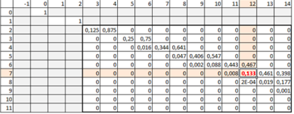

A high rectangle of width 2 is open from above, and the G-shaped domino falls inside it in a random way $($see the figure$)$.
a) k G-shaped dominoes have fallen. Find the mathematical expectation of the height of the resulting polygon.
b) 7 G-shaped dominoes fell inside the rectangle. Find the probability that the resulting figure will have a height of 12.
a) We denote the random variable "the height of the resulting polygon" by X. Obviously, $X = 2k - (I_2 + I_3 + ... + I_k)$, where $I_j$ is the indicator of the event "the G-shaped domino with numbers j and j - 1 form a block of height 3". This can only be in the two cases shown in the figure. The probability of this is 1/8. In this way, $EI_j = 1/8$. Therefore $EX = 2k - \frac{1}{8} (k - 1) = \frac {15k + 1}{8}$.

b) Let $u_{k, n}$ and $d_{k, n}$ denote the probability that a figure from k fallen G-shaped dominoes will reach a height of n, while the upper G-shaped domino will be located with the ledge up $($down$)$. The sum of these probabilities, that is, the probability that the height of a polygon of k G-shaped dominoes is equal to n, is denoted by $p_{k, n}$. Then $u_{k, n} = ½ p_{k-1, n-2}, d_{k, n} = ¼ u_{k-1, n-1} + ¼ u_{k-1, n-2} + ½ d_{k-1, n-2}$.
The total probability is $p_{k, n} = u_{k, n} + d_{k, n} = ½ p_{k-1, n-2} + ½ d_{k-1, n-2} + ¼ u_{k-1, n-2} + ¼ u_{k-1, n-1} = p_{k-1, n-2} - ¼ u_{k-1, n-2} + ¼ u_{k-1, n-1}$, whence $p_{k, n}$ = $p_{k-1, n-2} + 1/8 p_{k-2, n-3} - 1/8 p_{k-2, n-4}$.
To start the recursion, we set $p_{0,0} = p_{1,2} = 1$, in addition $p_{k, n} = 0$ for n$>$ 2k. We get: $p_{2,3} = p_{1,1} + 1/8 p_{0,0} - 1/8 p_{0, -1} = 0 + 1/8 - 0, p_{2,4} = p_{1,2} + 1/8 p_{0,1} - 1/8 p_{0,0} = 1 + 0 - 1/8 = 7/8$ and so on. The calculation can be carried out, for example, using Excel $($see the figure$)$. For convenience, we can introduce n = -1, putting the corresponding probabilities equal to zero. In the figure, this corresponds to an empty column C. Then only the cells, starting with k = 2, n = 3, will need to be filled in with the corresponding formula. In the image below, we have the number of G-shaped dominoes, k, as the row heading and the height of resulting polygon, n, is the column heading.

At the intersection of the 7th row and the 12th column, we find $p_{7,12}$ ≈ 0.133.
a) $\frac{15k + 1}{8}$; b) ≈0.133.